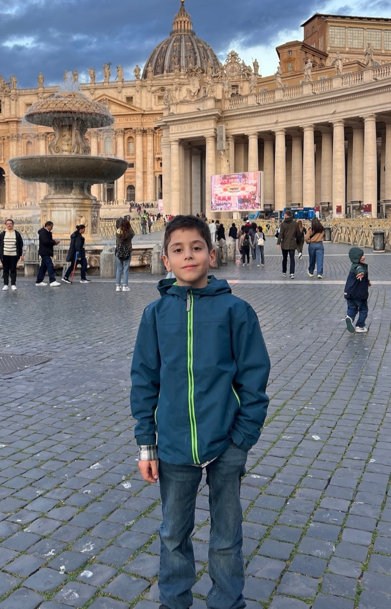

Բարև, ես Հայկն եմ 👋
Ես սիրում եմ փորձեր անել, պատրաստել 3D ստեղծագործություններ, հորինել պատմություններ և թղթից օրիգամի ծալել։ Այս կայքը իմ լաբորատորիան է՝ այստեղ ես հավաքում եմ այն ամենը, ինչ սովորում ու ստեղծում եմ։ Ամեն օր նոր բան եմ սովորում, այնպես որ իմ պատմությունը դեռ նոր է սկսվում։
Ինչ եմ սիրում
Իմ ճանապարհը
2026
- Սկսեցի գրել իմ առաջին մեծ գիրքը՝ «Արկածասեր Տիգրանը»։
- Ստեղծեցի իմ կայքը՝ «Իմ Լաբորատորիան»։